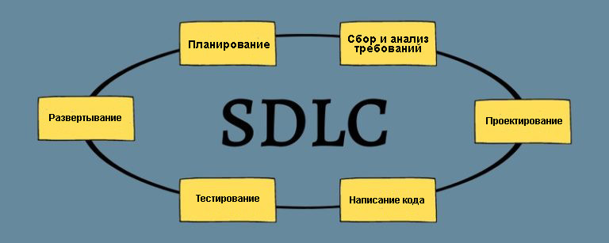
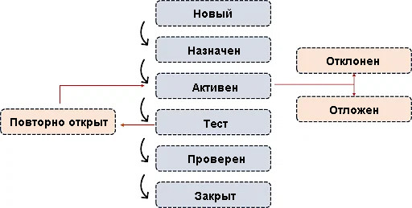

Это процесс анализа ПО и его документации для определения того, удовлетворяет ли оно потребностям конечного потребителя.
Также это процесс выявления дефектов и повышения качества продукта путем проверок его производительности, возможностей, полезности и удобства использования.
Тестирование программного обеспечения, необходимо для обеспечения качества и надежности ПО.
Контроль качества — это тщательное тестирование программы на наличие дефектов, а также проверка того, что программное обеспечение соответствует всем требованиям, выдвинутым заказчиком.
Обеспечение качества – это подход, который помогает убедиться, что методы, технологии и процессы, используемые для создания качественных результатов, применяются правильно.
Ручное тестирование программного обеспечения – это процесс, в котором тестировщики вручную прогоняют тест-кейсы, после чего пишут отчеты о результатах тестирования.
При автоматизированном тестировании ПО эти функции выполняются средствами автоматизации, которые включают в себя код и тестовые сценарии.
__________________
В чем разница между ручным и автоматизированным тестированием?
Ручное тестирование – это процесс проверки программного обеспечения на наличие дефектов
Оно требует, чтобы тестировщик вручную выполнял шаги тестирования и сравнивал фактические и ожидаемые результаты.
Автоматизированное тестирование использует специальное программное обеспечение для контроля выполнения тестов и сравнения фактических результатов с ожидаемыми.
Автоматизированное тестирование выполняется быстрее, чем ручное, и существенно сокращает время, необходимое для завершения цикла тестирования.
Эта аббревиатура расшифровывается как Software development lifecycle, в переводе – жизненный цикл разработки программного обеспечения.
SDLC включает в себя все этапы разработки ПО, в том числе сбор и анализ требований, проектирование, написание кода, тестирование, развертывание и сопровождение.
Тест-кейс используется для проверки соответствия приложения его требованиям.
Тест-кейс – это набор условий, набор действий, при которых тестировщик определяет, работает ли программная система или одна из ее функций так, как это было изначально запланировано.
Тестовый сценарий используется для тестирования функции приложения от начала до конца.
В одном тестовом сценарии можно разместить несколько тест-кейсов.
Применяется, если время на тестирование ограничено.
План тестирования – это официальный документ, определяющий объем тестирования, используемый метод, необходимые ресурсы и расчетное время для завершения процесса.
Он составляется на основе спецификаций (требований к программному обеспечению).
Тестовые данные – это информация, которая используется для тестирования программного обеспечения с различными входными данными и определения, соответствует ли полученный результат запланированному .
Тестовые данные генерируются в зависимости от потребностей компании.
Автоматизированный тест-кейс, написанный на любом языке программирования, называется тестовым скриптом.
По сути, это набор инструкций для оценки функциональности приложения.
QA инженеры используют тестирование методом “черного ящика”, когда они не знают внутренней архитектуры или у них нет доступа к структуре кода.
В отличие от тестирования “черного ящика”, метод “белый ящик” включает в себя анализ внутренней архитектуры системы и/или ее реализации, а также доступ к программному коду.
Альфа - тестирование проводят разработчики перед релизом.
Бета - тестирование проводится ,конечными пользователями на практически финальной версии продукта перед его выпуском на широкую аудиторию.
Верификация - оценивает программное обеспечение на этапе разработки, выясняя, соответствует ли продукт ожидаемым требованиям.
Валидация - оценивает готовое ПО на соответствие требованиям заказчика и конечного пользователя.
Это среда, используемая для тестирования приложения.
В нее входит: аппаратное обеспечение, а также любое программное обеспечение, необходимое для запуска тестируемой программы.
__________________
другими словами:
Тестовая среда – это набор программного обеспечения и данных, используемых для тестирования программного модуля путем его запуска в различных условиях и мониторинга его поведения.
Sanity тестирование проводится на уровне релиза и проверяет, работают ли основные функции в соответствии с заявленными в спецификации требованиям
Это должно быть сделано на этапе планирования тестирования.
Баг – это ошибка в программном обеспечении , которая обнаруживается во время тестирования.
Дефект – это расхождение между ожидаемыми и фактическими результатами , которое обнаруживается разработчиком после того, как продукт введен в эксплуатацию.
Ошибка - если программа не может быть запущена или скомпилирована во время разработки.
Сбой - если конечный пользователь сталкивается с неправильной работой ПО.
Это тестирование интерфейса между программным обеспечением и конечным пользователем.
GUI – сокращение от Graphics User Interface (графический интерфейс пользователя).
Ручное тестирование – это процесс выявления ошибок в программном продукте без использования автоматизированных инструментов .
Первым шагом ручного тестирования является определение объема тестирования .
Это
может быть конкретный модуль, функциональность, функция или вся система в целом.
Следующим шагом является разработка тестовых примеров на основе установленного объема
тестирования.
Они должны включать сценарии тестирования, предусловия, ожидаемые результаты и
все другие детали, необходимые для выполнения тестов.
После разработки тестовых примеров тестировщики выполняют их, чтобы найти любые расхождения между ожидаемыми и фактическими результатами .
При выполнении тестов тестировщики фиксируют результаты для дальнейшего анализа .
Документация является неотъемлемой частью ручного тестирования .
Очень важно записывать все шаги, предпринятые в процессе тестирования, чтобы обеспечить качественное тестовое покрытие и точные результаты .
Документация помогает вести контрольный журнал, который может быть использован для оценки результатов прошлых тестов и выявления областей для улучшения .
Кроме того, она является справочным материалом для других тестировщиков, которые могут быть незнакомы с тестируемой системой.
Функциональное тестирование – это тип тестирования методом “черного ящика”.
Оно
фокусируется на функциональных требованиях к программному обеспечению, а не на его внутренней
реализации.
Функциональное тестирование проверяет программное обеспечение на соответствие функциональным требованиям или спецификациям, игнорируя нефункциональные характеристики, такие как удобство использования и надежность .
Цель функционального тестирования – убедиться, что программное обеспечение соответствует функциональным требованиям и решает проблемы целевых пользователей.
Нефункциональное тестирование проверяет характеристики или качества системы, специально
запрошенные заказчиком.
Среди них – безопасность, масштабируемость и удобство
использования.
Нефункциональное тестирование проводят после функционального.
Оно изучает
аспекты, которые
не связаны с функциональными требованиями к программному обеспечению, и гарантирует, что программа
безопасна, адаптивна, быстро работает и способна выдерживать перегрузки.
Регрессионное тестирование – это повтор выполненных ранее тест-кейсов с целью убедиться, что существующие функции работают нормально.
Позитивное тестирование
Позитивное тестирование гарантирует, что программное обеспечение работает так, как
ожидается.
Тест завершается неудачей, если во время позитивного тестирования была
выявлена ошибка.
При этом тестировании QA инженер всегда использует только достоверные данные
__________________
Негативное тестирование
Негативное тестирование гарантирует, что ваше приложение может с легкостью справиться с неожиданным поведением пользователя или неправильным вводом данных..
При проверке приложения на ввод ошибочных данные тестировщики стараются быть максимально изобретательными.
Критическая ошибка – это ошибка, которая потенциально может повлиять на главные функциональности приложения.
Эта ошибка указывает на то, что работа важных функций или критических компонентов системы полностью нарушена.
Приложение не передается конечным пользователям до тех пор, пока критическая ошибка не будет исправлена.
Завершение тестирования – это финальный этап жизненного цикла тестирования ПО, на основании которого создается итоговый документ .
В нем обобщаются все тесты, проведенные на протяжении разработки программного обеспечения, а также делается полный анализ исправленных дефектов и обнаруженных ошибок.
Общее количество запланированных проверок, общее количество выполненных проверок, общее количество обнаруженных дефектов, общее количество устраненных дефектов, общее количество не устраненных ошибок, общее количество отклоненных ошибок и так далее – все это включается в этот документ.
Жизненный цикл дефекта – это процесс, в ходе которого дефект проходит множество стадий за все время своего существования.
Цикл начинается с момента обнаружения дефекта и завершается, когда дефект закрывается после проверки его устранения.
Согласно парадоксу пестицида, если одни и те же тесты повторять многократно, то они в конечном
итоге
перестанут находить новые ошибки.
Разработчики будут особенно осторожны в тех областях, где
тестировщики обнаружили больше недостатков, и могут пропустить ошибки в других.
С помощью этих методов можно обнаружить больше недостатков в областях с низким уровнем дефектов.
Это оценка интерфейсов прикладного программирования (API) на предмет их соответствия требованиям функциональности, надежности, производительности и безопасности.
Проще говоря, тестирование API предназначено для обнаружения дефектов, несоответствий или отклонений от ожидаемого поведения.
Системное тестирование – это вид тестирования, при котором проверяется все программное обеспечение.
Системное тестирование проверяет соответствие приложения бизнес-требованиям.
Cистемное тестирование обычно проводится в конце процесса разработки, после интеграционного и приемочного.
Приемочное тестирование – это вид тестирования, проводимый возможным конечным пользователем или заказчиком, чтобы убедиться, что оно соответствует бизнес-требованиям и может быть выпущено для широкой аудитории.
Когда протестированное программное обеспечение выводится на рынок, а конечный пользователь
обнаруживает ошибки, это называется утечкой дефекта.
Это ошибки, которые команда
тестирования упустила из виду на этапе тестирования.
Когда определенная версия программного обеспечения выпускается на рынок с ошибками, о которых
известно и которые, как ожидается, будут исправлены в последующих версиях, это
называется релизом бага.
Чаще всего это низкоприоритетные проблемы, которые
указываются в примечаниях к релизу при обмене информацией с конечными пользователями.
Сортировка дефектов – это процедура, в ходе которой дефектам присваивается приоритет в зависимости от различных характеристик, таких как серьезность, риск и количество времени, которое потребуется для устранения неисправности.
Для оценки дефектов собираются несколько заинтересованных сторон – команда разработчиков, команда тестировщиков, менеджер проекта, бизнес-аналитики и так далее, – чтобы определить порядок, в котором дефекты должны быть устранены.
Интеграционное тестирование выполняется после модульного.
При интеграционном тестировании проверяют группу связанных между собой модулей ПО.
Его цель – выявить неисправности, связанные с их взаимодействием.
Во многих случаях, когда проводится интеграционное тестирование сверху вниз, модули нижнего уровня не создаются до тех пор, пока модули верхнего уровня не будут протестированы и интегрированы.
В этих обстоятельствах используются заглушки или фиктивные модули для имитации поведения отсутствующего модуля путем предоставления жестко запрограммированного или прогнозируемого результата на основе входных переменных.
Количество кода, охваченного сценариями тестирования, называется покрытием кода.
Оно отражает масштаб охвата приложения тестовыми наборами.
Разбиение на классы эквивалентности – это метод тестирования “черного ящика”, основанный на спецификациях.
Набор входных данных, определяющий условия тестирования, разбивается на логически сопоставимые группы таким образом, что использование даже одних тестовых данных из группы для тестирования можно считать аналогичным использованию всех остальных данных в этой группе.
В этом методе для разработки тест-кейсов в качестве входных данных используются верхние, нижние и средние значения границ классов, образованных при эквивалентном разбиении.
В таких случаях лучший способ действий для тестировщиков — немедленно сообщить обо всех ошибках со статусом “критикал” или “блокер”.
Поскольку подобные ситуации могут привести к серьезным проблемам, таким как недостаточное модульное или интеграционное тестирование, плохой дизайн, неправильные методы сборки или выпуска и так далее, следует обязательно связаться с руководством и предоставить документацию в качестве доказательства наличия проблемы.
Ручное тестирование следует использовать, когда тесты являются специфическими или требуют человеческой интерпретации.
Ручное тестирование также лучше подходит для исследовательского тестирования, тестирования удобства использования, тестирования на нескольких операционных системах или уникальном оборудовании .
Системное тестирование – это вид тестирования программного обеспечения, при котором
оценивается полностью собранный программный продукт.
Оно проверяет, соответствует
ли программное обеспечение требованиям, указанным в проекте и технических спецификациях на
уровне системы
Системное тестирование также выявляет любые слабые места, ошибки или баги.
Интеграционное тестирование проверяет взаимодействие между двумя или более компонентами
системы.
Оно проводится после модульного тестирования и перед системным, и
проверяет, как компоненты взаимодействуют друг с другом.
Интеграционное тестирование
необходимо для того, чтобы убедиться, что компоненты системы работают вместе именно так, как было
запланировано.
Каскадирование дефектов – это тип проблем при тестировании программного обеспечения, при
котором последствия дефекта в одном модуле вызывает появление дефектов или проблем в
других модулях.
Это может произойти по разным причинам, но чаще всего это случается из-за
того, что первоначальный дефект не был устранен должным образом.
Каскадирование дефектов может привести ко множеству проблем, от незначительного замедления производительности до значительных сбоев системы, что делает его серьезным риском для разработчиков и тестировщиков программного обеспечения.
Под качеством при тестировании понимается степень, в которой продукт соответствует установленным
требованиям, а также степень, в которой он удовлетворяет потребности и ожидания клиентов.
Оно
включает в себя как функциональные, так и нефункциональные аспекты продукта.
Подход к тестированию сверху вниз и снизу вверх относится к порядку проведения тестирования.
Нисходящее тестирование начинается с самого высокого уровня и работает по нисходящей.
Таким образом, каждый компонент более высокого уровня тестируется изолированно от компонентов
более низкого уровня.
Тестирование снизу вверх начинается с самого низкого уровня и работает по нарастающей.
Таким образом, каждый компонент нижнего уровня тестируется изолированно от компонентов верхнего
уровня.
Smoke тестирование – высокоуровневое тестирование, используемое для обеспечения правильной
работы наиболее важных функций программной системы.
Это быстрое тестирование, которое можно
использовать для определения того, стоит ли тратить время и энергию на дальнейшее, более обширное
тестирование.
Sanity тестирование – это более специфический тест, используемый для проверки того, что
недавние изменения в системе не вызвали никаких новых, нежелательных проявлений.
Оно гарантирует,
что после внесения незначительных изменений основные функции продолжают работать так, как ожидалось.
Статическое тестирование – это тип тестирования, проводимый без выполнения кода
программного приложения.
Вместо этого оно включает в себя обзоры, инспекции и прохождение тестов.
Динамическое тестирование предполагает выполнение кода программного приложения для
определения результатов определенных функций и операций.
Оно включает модульное, интеграционное и
приемочное тестирование.
При тестировании крайне важно определить, когда следует остановиться, чтобы не тратить ресурсы впустую.
Как только эти критерии будут выполнены, можно прекратить тестирование.
Когда требования еще не определены, лучше всего использовать методологию гибкой разработки, например Scrum.
Первым шагом должно стать проведение совещаний по сбору требований со всеми заинтересованными сторонами, чтобы понять цель продукта и желаемые результаты.
Затем следует разбивка проекта на отдельные, управляемые пользовательские истории.
После этого определяют приоритеты пользовательских историй и назначают спринт для их разработки.
По мере продвижения проекта продукт постоянно тестируют, используя такие виды тестирования, как модульное, интеграционное, приемочное и системное.
Кроме того, по мере изменения требований тесты должны обновляться, чтобы гарантировать соответствие продукта желаемым результатам.
Анализ граничных значений помогает составить хорошие тест-кейсы, поскольку он гарантирует, что границы входных и выходных значений будут проверены.
Такие проверки помогают выявлять ошибки, связанные с обработкой граничных условий, и гарантируют, что ваша система надежна и может обрабатывать любые неожиданные входные или выходные значения.
Невозможно полностью проверить всю программу или избавить ее от всех возможных ошибок, потому что нельзя предусмотреть и протестировать все возможные комбинации входов, окружений и состояний, с которыми может столкнуться ПО.
Управление конфигурацией – это управление, отслеживание и контроль изменений в программном, аппаратном или сетевом обеспечении системы.
Все это помогает поддерживать целостность системы и гарантировать, что она безопасна, стабильна и соответствует политике организации.
Основными целями управления конфигурацией являются обеспечение надежности, поддержание доступности и повышение производительности системы.
Нет. Мы можем автоматизировать повторяющиеся, утомительные тест-кейсы и сделать процесс тестирования
более эффективным.
Однако автоматизированное тестирование не может полностью заменить ручное,
поскольку некоторые тесты можно выполнить только вручную.
Виды тестирования, которые нельзя автоматизировать, – исследовательское, пользовательское, удобства использования.
Но хотя автоматизированное тестирование и не сможет полностью заменить ручное, справедливо будет заметить, что в перспективе ручное тестирование будет низведено до роли “младшего партнера”, призванного заботиться о тех немногих вещах, с которыми автоматизированное тестирование пока не может справиться должным образом.
Автоматизированное тестирование постоянно развивается.
Более того, по мере совершенствования
технологий и их дальнейшего развития, можно с уверенностью сказать, что автоматизация сможет
преодолеть свои слабые стороны, а сильные стороны ручного тестирования станут незначительными.